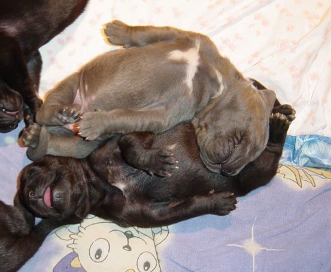
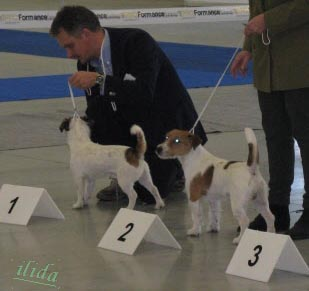
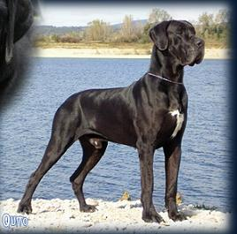
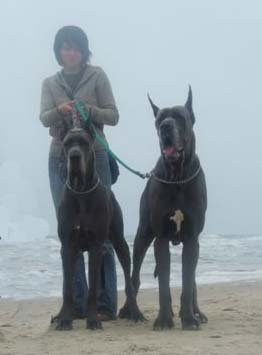

19.12.2007 - HEROINA vom Haus Tchorz pass her IPO exam, she was second :)
 28.11.2007 - Heksa delivered her babies after FOR PLEASURE of the Hunters Pride.
We've got one male and 4 females
28.11.2007 - Heksa delivered her babies after FOR PLEASURE of the Hunters Pride.
We've got one male and 4 females

19.11.2007 - We were waiting over two years but here they are 11 black/blue puppies !! Litter "M" - 6 males ( 5 blue & 1 black ), 5 females ( 1 blue & 4 black )
17.11.2007 - GUMMIE BEAR Balao gets his first title of Junior Winner and Best of Breed. Congratulation and a lot of thanks to owner !!! 08.10.2007 LOREDANA is smooth, tricolor, georgeus female. She was born in
Stjarnlides Jack kennel in Sweden.
08.10.2007 LOREDANA is smooth, tricolor, georgeus female. She was born in
Stjarnlides Jack kennel in Sweden.
05.10.2007 - OH MY DARLING Balao had her date with QUIXOTE-B del Regno di Fantasia. Puppies should be born in December. Unfortunately we have to wait 6 months longer :(


 23.09.2007 - Polish club show in £ódŸ. Quixote was
second excellent in champion class.
23.09.2007 - Polish club show in £ódŸ. Quixote was
second excellent in champion class.
22.09.2007 - HEROINA was the best dog on German Shepherd tests in Warszawa, she gained 13 points.

19.09.2007 - We were with NO DOUBT in Hungary to mate her with beautiful QUITO della Baia Azzurra. She will have puppies in November. 15.09.2007 - National dog show in Radom. FLASH JACK gained 3rd CAJC and completed
the title of Polish Junior Champion.
15.09.2007 - National dog show in Radom. FLASH JACK gained 3rd CAJC and completed
the title of Polish Junior Champion.08.09.2007 - National dog show in Warszawa FLASH JACK & GUMMIE BEAR gained the same titles just as 2 weeks ago in Bia³ystok.
25.08.2007 - International dog show in Bia³ystok. FLASH JACK and GUMMIE BEAR were debutting. Both gained excellent results. FLASH got his first CAJC and GUMMIE was the best puppie.

04.08.2007 - International dog show in Palanga. NO DOUBT finished Interchampionship05.08.2007 - Lithuanian Club Show
NO DOUBT Balao & QUIXOTE del Regno di Fantasia - II Best Couple
08.07.2007 - International dog show in Warszawa FOR PLEASURE - CWC, CACIB, BOB
 28.05.2007 - "I" litter was born. There is 3 males and 2 females. All puppies are
tan-white.
28.05.2007 - "I" litter was born. There is 3 males and 2 females. All puppies are
tan-white.
 07.04.2007 - Again we have puppies. YACUZA has delivered 5 ( 2/3 ) pups after FOR PLEASURE of the Hunters Pride.
All are very huge and excellent markes.
07.04.2007 - Again we have puppies. YACUZA has delivered 5 ( 2/3 ) pups after FOR PLEASURE of the Hunters Pride.
All are very huge and excellent markes.
30.03.2007 - VENDETTA LAIRDSLEY Ons Eiland had her date with full blood australian male Lemonsa Hopes MANDRAKE. Pups should be born on the end of May.


19.03.2007 - IZYDOR Medium died so suddenly. We still can't belive that it happened.
24.02.2007 - In mine heart BELKA will stay forever. She had cancer ...
04.02.2007 - National dog show in Rzeszów NO DOUBT - CWC, BOS, BOB - she finished Polish Championship.
29.01.2007 - First puppies birth in this year. In litter "G" we have 8 ( 4/4 ) puppies. WONDERFUL WHOOPIE is wonderful mother ;)


02.01.2007 - This year had started very sad. MESALKA died. She was proud mother of 4 litters, excellent friend and Dane from all her heart. We miss her so much.